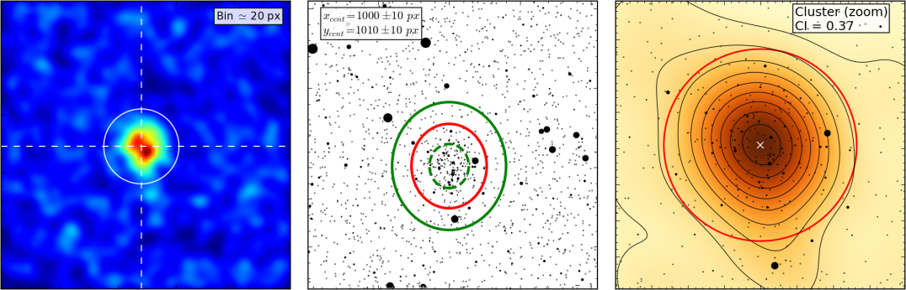

ASteCA¶
Article: ASteCA: Automated Stellar Cluster Analysis (A&A, 2015)
Site: asteca.github.io
Source: github.com/asteca
Documentation: asteca.rtfd.org
This is the manual of operation for the Automated Stellar Cluster Analysis (ASteCA) package. If you encounter any problems please contact me or open a new issue.
Warning
This documentation is in the process of being written and is not yet finished. Updates will be made as versions are released. Last updated: August 07, 2019.
Important
A PDF version of this manual can be downloaded here.